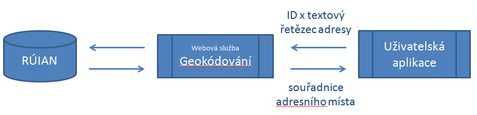

Info
V rámci vytvoření a ověření postupů popsaných v této metodice byly zprovozněny referenční služby na adrese http://www.vugtk.cz/euradin/Services. Tyto služby jsou určeny ke kontrole správné funkčnosti implementací, které budou v souladu s touto metodikou a procesů, které je využívají. 
Vyhledávání adresního bodu adresního místa
Formátování adresy ve standardizovaném tvaru

Vyhledávání adresního místa podle řetězce

Ověřuje existenci dané adresy